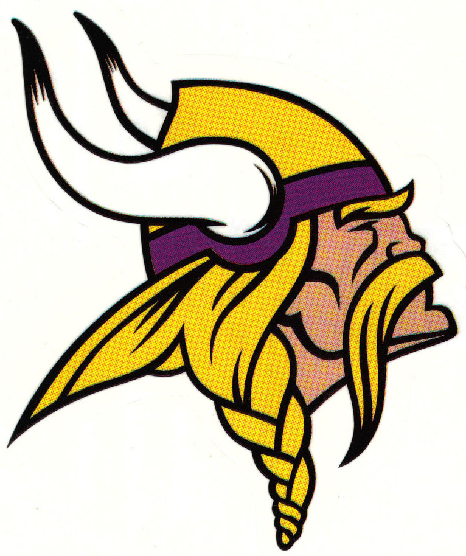
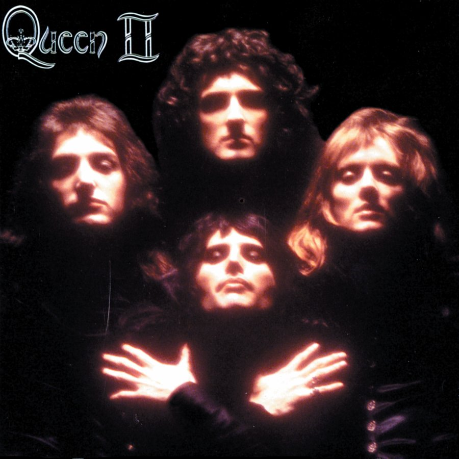

Mick has loved board games since he was a child. His sophomore year of college he discovered
trading card games and fell in love. Starting with Pokemon, he began to play other games like
Yu-Gi-Oh and eventually, Magic The Gathering. He loves the way one can build their deck to
play exactly how they want. Furthermore, the fact that it is a social event of playing with
others is a huge draw to mick and Trading Card Games like Magic.
Minnesota Vikings

Minnesota Vikings Logo
When Mick was 16 he signed up to play football at his high school. At nearly the same time he
became obsessed with his hometown team, The Minnesota Vikings. Growing up in St. Paul, Minnesota,
the Vikings were always nearby. He has watched every Vikings game since 2010. Even when deployed, Mick
always finds a way to watch his Vikings win (or more likely, lose).
Music

Queen
Mick has a deep love for music, spanning numerous genres. He grew up listening to one of his
dad's favorites, Led Zeppelin. While he loves modern music, his favorite band is Queen, with his
favorite song being Fat Bottomed Girls by Queen. Mick has been to countless concerts and seen artists
ranging from Mumford and Sons to Kanye West. Unfortunately he will never be able to see Queen live
in concert.
Work History
Family Video
Family Video
As a deep lover of movies, it made sense to Mick that he would get a job at a video rental store.
At the beginning of his Freshman Year of college Mick was hired to work at Family Video, the last
of the video rental stores. He would eventually become that store's manager and set numerous individual
and store sales records before ultimately leaving to enlist in the United States Air Force.
Caribou Coffee
Caribou Coffee
If there's one thing Mick loves as much as movies it's coffee. The moment he found out a Caribou
Coffee would be opening in his college town of Marshall, Minnesota, he applied. Eventually being promoted to
shift supervisor, while still working at Family Video, Mick and his wife both loved their time working at the
local Caribou Coffee.
United States Air Force
United States Air Force
After spinning his wheels in college, and ultimately caring more about the jobs he got to pay for college
Mick took the second largest leap of his life (the first was marrying his wife) and enlisted in the
United States Air Force. Joining the Air Force might have been the best choice of his life, again, outside
of marrying Taylor. He has already traveled more in the past four years than the previous 23, and there's no
sign of slowing down. Additionally, joining the Air Force is what lead him to his current academic success.